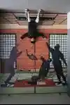
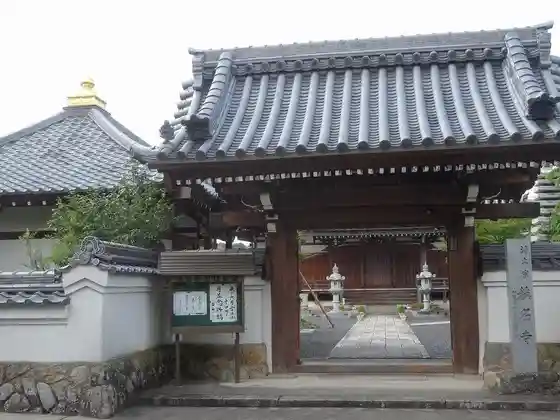
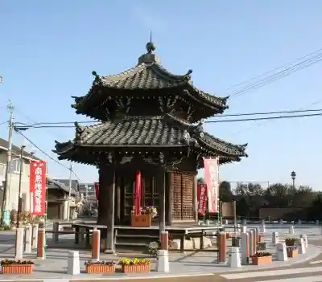
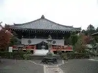

JR Koka Eki no Torikkuato
Koka, Shiga · Official / source link

Shomyo Tera
Koka, Shiga · 0748-88-3759 · Official / source link

Rokkaku Do
Koka, Shiga · Official / source link

Kunugi Nodera (Ichii no Kannon Sama)
Koka, Shiga · Official / source link

Kokoro Mitsudera
Koka, Shiga · 0748-62-2449 · Official / source link
Tarumi Saio Hayamiya Ato
Koka, Shiga · Official / source link
Hono no Bi Tori
Koka, Shiga · 0748-82-2345 · Official / source link
Koka Folk History Museum
Koka, Shiga · 0748-88-2106 · Official / source link
Sen Zendera Ato Magai Hotoke
Koka, Shiga · 0748-82-2345 · Official / source link
Shigaraki to En Tanuki Village
Koka, Shiga · Official / source link
Mizuguchi Senchurii Hotel
Koka, Shiga · 0748-63-2811 · Official / source link
Yasaka Shrine
Koka, Shiga · 0748-62-6688 · Official / source link
Yagawa Shrine
Koka, Shiga · 0748-86-3141 · Official / source link
Hayamiya Dai Chaen
Koka, Shiga · Official / source link
Nishi Sakae Tera
Koka, Shiga · 0748-62-1541 · Official / source link
Mitokoro Shrine
Koka, Shiga · 0748-82-2345 · Official / source link
Kurotaki Yugyo Ba
Koka, Shiga · 0748-68-0531 · Official / source link
Shu to En
Koka, Shiga · 0748-82-0316 · Official / source link
Shingu Shrine (Koka)
Koka, Shiga · Official / source link
Ai no Mori Fureai Park Aoni Dam Ekobarei
Koka, Shiga · 0748-66-0316 · Official / source link
Ayukawa no Sembonzakura
Koka, Shiga · Official / source link
Koshin Yamahiro Toku Tera
Koka, Shiga · Official / source link
Hinoki O Shrine
Koka, Shiga · 0748-86-5878 · Official / source link
Yokota Watari Joyato
Koka, Shiga · Official / source link
Mizuguchi Yado
Koka, Shiga · Official / source link
Koka Hito Machi Kaido Koryu Kan
Koka, Shiga · 0748-70-3166 · Official / source link
Myon Tera
Koka, Shiga · 0748-69-2250 · Official / source link
Tsuchiyama Service Area
Koka, Shiga · 050-5482-5563 · Official / source link
Ogawa Castle Ruins
Koka, Shiga · 0748-82-2345 · Official / source link
Koka Village Ninjutsu Village
Koka, Shiga · 0748-88-5000 · Official / source link
Koka Ichigo Hausu
Koka, Shiga · 0748-88-4149 · Official / source link
Iwao Yama (Iki Sho Tera)
Koka, Shiga · 0748-86-5700 · Official / source link
Ogama
Koka, Shiga · 0748-82-8066 · Official / source link
Mizuguchi Yado Honjin Ato
Koka, Shiga · Official / source link
Minakuchi Kodomo Forest
Koka, Shiga · 0748-63-6712 · Official / source link
Hinoki O Tera
Koka, Shiga · 0748-86-3765 · Official / source link
Narita Ranch
Koka, Shiga · 0748-86-3341 · Official / source link
Shiono Onsen
Koka, Shiga · Official / source link
Hando Shrine
Koka, Shiga · 0748-82-2345 · Official / source link
Tsuchiyama Folk History Museum
Koka, Shiga · 0748-66-1056 · Official / source link
Amida Tera (Koka)
Koka, Shiga · 0748-88-3721 · Official / source link
Taraokantorii Club
Koka, Shiga · 0748-85-0025 · Official / source link
Kashiwagi Shrine
Koka, Shiga · 0748-62-3339 · Official / source link
Soja Shrine
Koka, Shiga · Official / source link
Shigaraki Kogen Tetsudo
Koka, Shiga · 0748-82-3391 · Official / source link
Takama Mizube Park
Koka, Shiga · 0748-65-0720 · Official / source link
Keimei Falls
Koka, Shiga · Official / source link
Senchuriigorufu Club
Koka, Shiga · 0748-86-4011 · Official / source link
Takikawa Castle Ruins
Koka, Shiga · 0748-69-2250 · Official / source link
Tsuchiyama Yado Honjin Ato
Koka, Shiga · 0748-66-0007 · Official / source link
Mizuguchi Supotsu Forest
Koka, Shiga · 0748-62-7529 · Official / source link
Kanko Infomeshon Center Koka Ryu Riaru Ninja Kan
Koka, Shiga · 0748-70-2790 · Official / source link
Bi Fuku Shuzo
Koka, Shiga · 0748-62-1113 · Official / source link
Tokaido Tenma Kan
Koka, Shiga · 0748-66-2770 · Official / source link
Daiyamondo Shiga
Koka, Shiga · Official / source link
Ta Village Shrine
Koka, Shiga · 0748-66-0018 · Official / source link
Fujie Shrine
Koka, Shiga · Official / source link
Shingu Shrine
Koka, Shiga · Official / source link
Mizuguchi Folk History Museum
Koka, Shiga · 0748-62-7141 · Official / source link
Daitoku Tera
Koka, Shiga · Official / source link
Togei Experience
Koka, Shiga · Official / source link
Koka Ryu Ninjutsu Residence
Koka, Shiga · 0748-86-2179 · Official / source link
Shiga Safari Museum
Koka, Shiga · 0748-83-0121 · Official / source link
Shiga Prefectural Togei Forest
Koka, Shiga · 0748-83-0909 · Official / source link
Kamamoto Sansaku Michi
Koka, Shiga · Official / source link
Seiryo Tera (Koka)
Koka, Shiga · 0748-66-0619 · Official / source link
Suzuka Sukai Line
Koka, Shiga · Official / source link
Bannin Ko Joyato
Koka, Shiga · Official / source link
Yamada Ranch
Koka, Shiga · 0748-82-2007 · Official / source link
Oike Tera
Koka, Shiga · 0748-62-0396 · Official / source link
Myo Tera
Koka, Shiga · 0748-86-2572 · Official / source link
Tama Katsura Tera
Koka, Shiga · 0748-83-0716 · Official / source link
Tokaido Tenma Kan
Koka, Shiga · 0748-66-2770 · Official / source link
JR Konan Eki
Koka, Shiga · Official / source link
Kyu Mizuguchi Library
Koka, Shiga · 0748-86-8026 · Official / source link
Mizuguchi Shrine
Koka, Shiga · 0748-62-0231 · Official / source link
Shigaraki Kogen Tetsudo Shigaraki Eki
Koka, Shiga · Official / source link
Jofuku Tera
Koka, Shiga · 0748-86-2314 · Official / source link
Ohara Castle Ruins
Koka, Shiga · Official / source link
Misuji Falls
Koka, Shiga · 0748-82-2345 · Official / source link
Hando Tera
Koka, Shiga · 0748-60-2690 · Official / source link
Aburahi Shrine
Koka, Shiga · 0748-88-2106 · Official / source link
Shigaraki Tanuki Onsen Ogawa Tei
Koka, Shiga · 0748-82-0008 · Official / source link
Mizuguchi Teku no Su Farm
Koka, Shiga · Official / source link
Shigaraki Kyuseki (Koka Jiseki)
Koka, Shiga · 0748-86-8026 · Official / source link
Sawa Yoshiyuki Se Taiken Kan
Koka, Shiga · Official / source link
Hatake no Shidare Sakura
Koka, Shiga · Official / source link
Shigaraki Dento Sangyo Hall
Koka, Shiga · 0748-82-2345 · Official / source link
Kasayama Shrine
Koka, Shiga · Official / source link
Mizuguchi Kyokai Kaido Monchu
Koka, Shiga · 0748-62-0329 · Official / source link
Chofuku Tera
Koka, Shiga · 0748-88-5111 · Official / source link
Kusuri Gakushu Kan
Koka, Shiga · Official / source link
Mizuguchi Yado Higashi Mitsuke Ato
Koka, Shiga · Official / source link
MIHO MUSEUM
Koka, Shiga · 0748-82-3411 · Official / source link
Ogiya Densho Bunka Kan
Koka, Shiga · 090-6969-3108 · Official / source link
Himezuka
Koka, Shiga · Official / source link
Kafuka Yume Forest
Koka, Shiga · 0748-88-2190 · Official / source link
Mizuguchi Castle Ruins (Mizuguchi Shiro Museum)
Koka, Shiga · 0748-63-5577 · Official / source link
Ichiri Tsuka
Koka, Shiga · Official / source link
Kojo Yama (Mizuguchi Okayama Castle Ruins)
Koka, Shiga · 0748-65-0708 · Official / source link
Hotel Reikuvira
Koka, Shiga · 0748-85-0250 · Official / source link
Ayano Tenmangu Shrine
Koka, Shiga · Official / source link
Wada Castle Ruins
Koka, Shiga · Official / source link
Roadside Station Ai no Tsuchiyama
Koka, Shiga · 0748-66-1244 · Official / source link
Otori Shrine
Koka, Shiga · 0748-88-2008 · Official / source link
ROSE GOLF CLUB
Koka, Shiga · 0748-83-0031 · Official / source link
Senkoji
Koka, Shiga · 0748-60-2690 · Official / source link
Joko Tera
Koka, Shiga · Official / source link
Soma Kawa Tsutsumi
Koka, Shiga · Official / source link
Yama Village Shrine
Koka, Shiga · Official / source link
Ooka Tera
Koka, Shiga · 0748-62-3872 · Official / source link
Sei Fuku Tera (Koka)
Koka, Shiga · 0748-86-2879 · Official / source link
Gan Takashi Tera
Koka, Shiga · 0748-62-2777 · Official / source link
Senpuku Tera
Koka, Shiga · 0748-62-2852 · Official / source link
JR Kibukawa Eki
Koka, Shiga · Official / source link
Ryufuku Tera
Koka, Shiga · 0748-88-3593 · Official / source link
JR Aburahi Eki
Koka, Shiga · 0748-65-0708 · Official / source link
Omitetsudo Mizuguchi Eki
Koka, Shiga · Official / source link